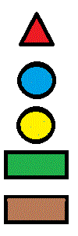

|
lewe menu
|
obszar główny
13 Tech. Gdańsk
pzyjazna szkoła
Gdańsk, 08 sierpień 2024 r.
Layout (interfejs strony internetowej) – element konstrukcji graficznej, w którym ustala się:
1. rozmieszczenie elementów (treści) na stronie.
2. wygląd (kolorystykę, elementy dekoracyjne, krój czcionki)
Popularne technologie Layoutu dla stron WWW
1. w oparciu o tabele (iframe) lub ramy (frame)
2. w oparciu o DIV’y
3. w oparciu o instrukcje HTML5 (nav, ……….)
|
prawe menu

|